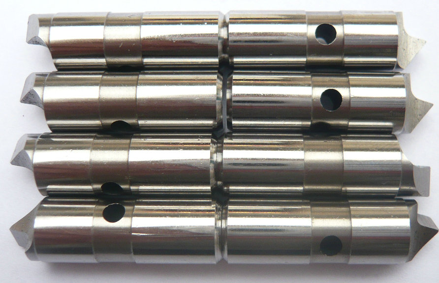
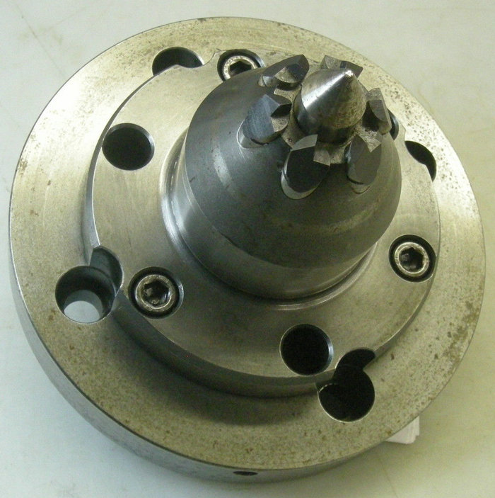
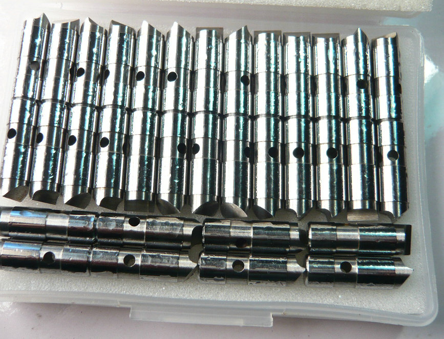

OEM: Stirnseitenmitnehmer-Zubehör, Ersatzteile für Stirnmitnehmer , Mitnehmerbolzen, Zentrierspitzen!
Präzisions-Versatz-Mitnehmerbolzen für Stirnseitenmitnehmer – Ihr starker Partner aus China


Bei vielen Anwendungen – beispielsweise bei der Bearbeitung von Rohlingen mit ungenauer Zentrierung oder bei der Aufnahme von bereits teilfertigen Teilen – reichen standardmäßige, fluchtende Mitnehmerbolzen nicht aus. Hier kommen Mitnehmerbolzen mit radialem Versatz ins Spiel. Sie ermöglichen einen definierten Offset, um den Drehmomentübertrag auch dann sicherzustellen, wenn Werkstückmittelachse und Maschinenspindelachse nicht exakt übereinstimmen. Je nach Konstruktion spricht man auch von exzentrischen Mitnehmerbolzen oder einfach von Versetzte Mitnehmerbolzen


Stirnseitenmitnehmer haben sich als leistungsstarke Werkzeuge für die wirtschaftliche Bearbeitung von Wellen und rotationssymmetrischen Bauteilen etabliert. Das Herzstück dieser Spannsysteme – die Mitnehmerbolzen – müssen höchsten Belastungen standhalten, insbesondere wenn es um radialen Versatz oder exzentrische Anforderungen geht.
Typen von Stirnmitnehmer-Mitnehmerbolze
| Typ | Einzeilige Regel | ||||||||||
|---|---|---|---|---|---|---|---|---|---|---|---|
| Vollflächige Treiberstifte | Weich & dünn – lass Vollflächige gewinnen. | ||||||||||
| Versetzte Treiberstifte | Rau & hart – Versetzt ist deine Karte. | ||||||||||
| Zentrale Treiberstifte | Fest & kurz – Zentral wird sich nicht verformen. | ||||||||||
Wir sind ein spezialisierter Hersteller aus China mit langjähriger Erfahrung in der Fertigung von versetzten Mitnehmerbolzen für Stirnseitenmitnehmer. Unsere Produkte werden weltweit von renommierten Stirnseitenmitnehmer-Herstellern und Endanwendern aus der Dreh- und Schleiftechnik eingesetzt.
Unsere Spezialität ist die präzise Fertigung solcher Versatzbolzen. Jedes Bauteil wird nach Ihren Zeichnungsvorgaben gefertigt – egal ob Sie einen exakten radialen Versatz von beispielsweise 0,5 mm oder eine individuelle Sonderlösung benötigen.
Wir produzieren an modernsten CNC-Schleif- und Härteanlagen. Die von uns gefertigten Mitnehmerbolzen erreichen Härten bis über 60 HRC sowie enge Toleranzen im µ-Bereich. Unsere Qualitätskontrollen umfassen 100%-Prüfungen mit optischen Messmaschinen und Härteprüfgeräten. Damit erfüllen wir auch die strengen Anforderungen deutscher und österreichischer Stirnseitenmitnehmer-Hersteller.
Ob konzentrisch, radial versetzt oder exzentrisch – wir stellen jeden Bolzen genau so her, wie Sie ihn benötigen. Wir fertigen nach Muster, Zeichnung oder 3D-Daten. Auch kleine Stückzahlen für Reparaturaufträge oder große Serien für die Erstausrüstung (OEM) sind unser tägliches Geschäft.
- Startseite
- Produkte
- Kontakt
- Exzentrische Mitnehmerbolzen
- halb versetzte Antriebsstifte
- Zentrische Mitnahmebolzen
- Standard-Mitnehmermesser
- abgefachte Mitnahmebolzen
- Rechtslauf Antriebszapfen
- Linkslauf-Mitnehmerstifte
- Mitnehmerbolzen mit voller Mitnahmebreite
- langlebige Mitnehmerbolzen
- Mitnehmerbolzen mit Meißelkante
- schwimmende Mitnehmer
- Kraftbetätigte Mitnehmerbolzen
- hydraulische Anschlussstifte
- mechanische Anschlussstifte
- bewegliche Mitnehmerbolzen
- feste Anschlussstifte
- Hartmetall Mitnahmebolzen
- Werkzeugstahl S7 Bolzen
- Wechselbare Mitnehmerbolzen
- Mitnehmerstift